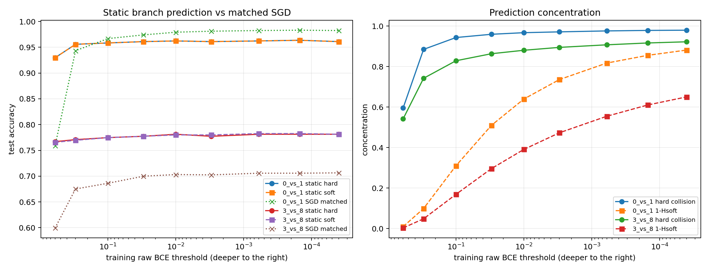

实验概览
目的
E25 把 Boolean 真值表方法迁移到真实图像。Stage 0先在两个二分类任务上校准最小训练集和过拟合 loss 区间；Stage 1冻结条件后，从同一训练 loss parent 比较每张未见图像两个标签分支的静态质量，检验其预测准确率、NLL U 形和 SGD 转折位置。
运行顺序
python experiment_mnist_loss_calibration.py
python experiment_mnist_static_branch_prediction.py
SHA256
0cbd6099986c973fd77e38397d8f14a878ca7054f4e308e9675dfc819e1c5df5 calibration script
20b19dffdcf254bd0656e83b9b02393e9ee887c0f00f62dc7ed2019d6c766eeb static prediction script
11e786b30e3e76739e3666f805fbbaaf9060475c021e54c7761b862ace85dae5 calibration ZIP
f104fc963fa9e7afe1531b32d63a2da80796899f84179cd5c68df24de3b05ae9 prediction ZIP
MNIST IDX 文件需置于脚本配置的数据目录。原始结果 ZIP 位于E:\Downloads，不进入发布包。
为什么做、怎样判决
1. 从规则表到真实输入
对未见样本x，框架的直接预测不是先训练一个额外分类器，而是在同一个L_D<=epsilon静态 parent 中比较：
soft 版本在 parent 内加入 Bernoulli likelihood；-log P_soft(y)是单样本自由能增量。两者都选择剩余参数质量更大的标签。
2. Stage 0校准
- 任务：MNIST
0 vs 1和3 vs 8； - 输入：28x28 平均池化到7x7 并映射到[-1,1]；
- 网络：
49 -> 32 -> 1 tanh，1,633参数； - n=4到512，四份数据集 x 八 seed，15,000步；
- 测量 train/validation BCE、hard accuracy、agreement 与 U 形转折。
Stage 0允许使用 validation 选择两个对照任务、最小 n 和要覆盖的 loss 网格，因此后续是“校准后冻结”的确认，不是完全盲的新任务预测。
3. Stage 1冻结
冻结0/1,n=4,dataset0与3/8,n=4,dataset0，以及九个 train raw-BCE 截面0.6...4e-5。每个条件使用6副本 x4,096粒子的 Gaussian-pCN SMC。每个截面的 validation/test 预测先写入 unscored 文件并计算 SHA256，再读取标签评分。
主要判决：
- 静态分支是否显著高于随机预测真实 MNIST；
- 静态 soft NLL 是否自行形成 U 形；
- 其最低区间是否与 matched-loss SGD validation 转折对齐；
- 两任务的低-loss 体积差是否与最小充分样本量同向。
结果、解读与边界
1. 四个样本的任务差异
Stage 0中，按每条轨迹最低 validation BCE 选 checkpoint：0/1,n=4的 median validation accuracy 为96.74%、test 为98.31%；3/8,n=4仅为70.44%/69.66%。按 median best-validation 至少95%的操作阈值，0/1在 n=4已跨过，3/8直到 n=512才跨过。
相同输入维度、网络、样本数和训练预算因此对应约128倍的样本辨识尺度差异。
2. 静态体积预测真实图像
Stage 1九个 loss 截面全部完成。Test static hard accuracy 从浅到深大致为：
0 vs 1: 92.97% -> peak 96.35% -> 96.09%
3 vs 8: 76.69% -> peak 78.13% -> 78.13%
四个训练样本下，两任务在epsilon=0.6即明显高于随机；深入 loss 总体改善 hard 预测，但不是全程单调。静态分布也明显不同于 matched-loss AdamW，尤其3/8浅层静态准确率约76.7%而 SGD 约60%。

3. 静态几何重建 NLL U 形
0/1的 test 和 validation soft NLL 在epsilon=0.0006附近最低；同一固定训练集的 SGD validation 最低点对应 train BCE 约1.46e-4，相差一个预注册网格区间。3/8的 test 最低在0.01、validation 最低在0.03，SGD 最低对应 train BCE 约0.0455，直接落在相邻区间。
因此经典 validation-loss U 形至少存在一个 optimizer 之前的静态几何来源。由于 Stage 0参与选择任务和 loss 覆盖范围，这还不是对全新数字对转折位置的完全盲预测。
4. Agreement、accuracy 和校准发生分离
Hard point collision 随 loss 深入：0/1从0.595升到0.979，3/8从0.542升到0.922。但3/8准确率在78%左右停住后仍继续收束。持续预测错误的样本上，真实标签 soft 分支质量在 NLL 最优点后继续下降，解释了 hard accuracy 近乎不变而 NLL 上升：少量边界修正与错误置信度膨胀可以同时发生。
5. 体积差与样本复杂度同向
3/8相对0/1少的 median 参数质量从epsilon=0.6时0.56个十进制数量级，扩大到epsilon=4e-5时55.43个数量级；这与95%辨识阈值n=512 vs n=4同向。它构成 Neural K-profile、真实图像预测和样本相变之间的三角测量。
6. 边界
- 只覆盖两个二分类任务、tiny MLP 和各一个固定 n=4数据集；
- static soft branch 不是完整 Bayesian posterior predictive；
- 深尾 lineage 有退化，单样本高精度赔率仍需更多粒子和重复；
- 结果证明静态体积有一阶预测力，同时再次否定“SGD 无偏采样静态后验”；
- 本实验不解析为什么该网络语言给3/8分配更小低-loss 体积。